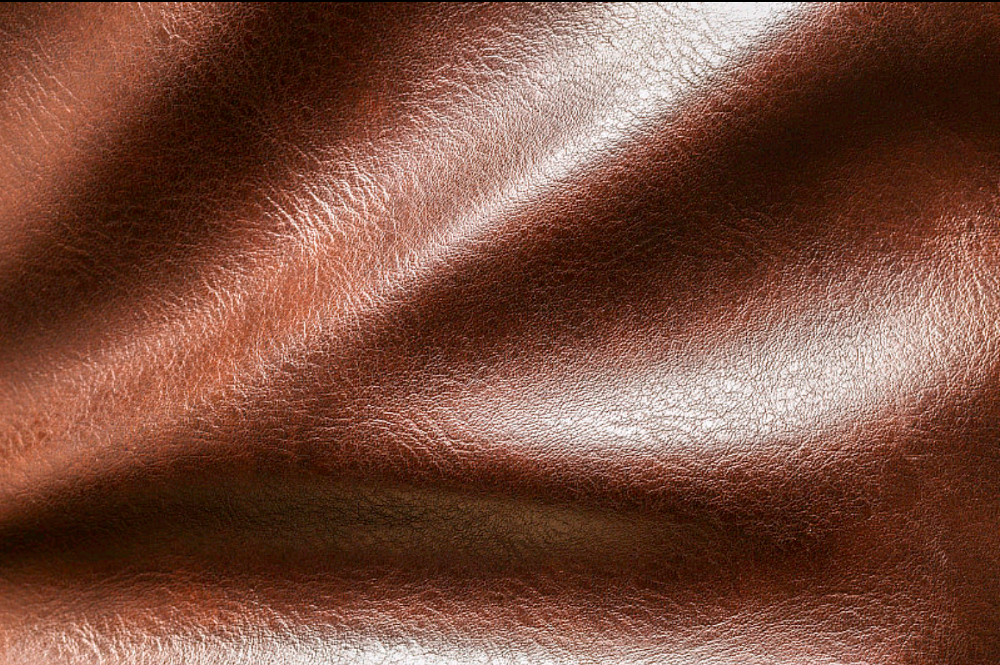
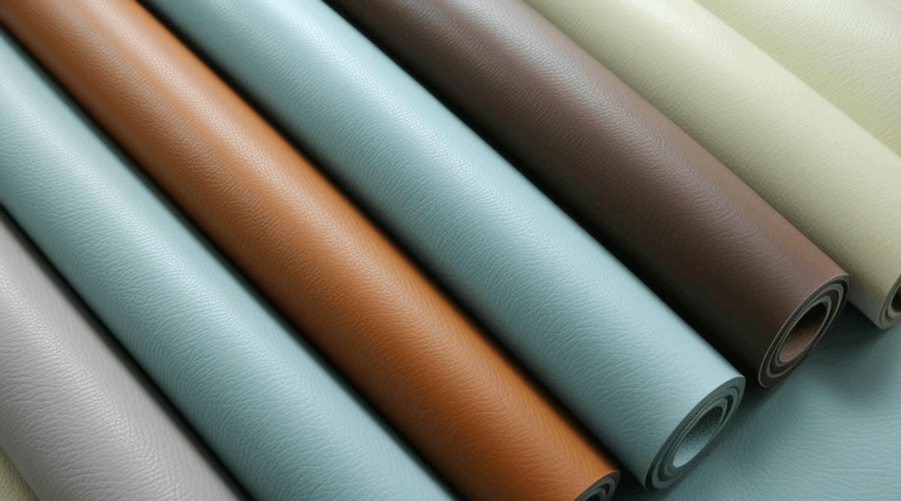
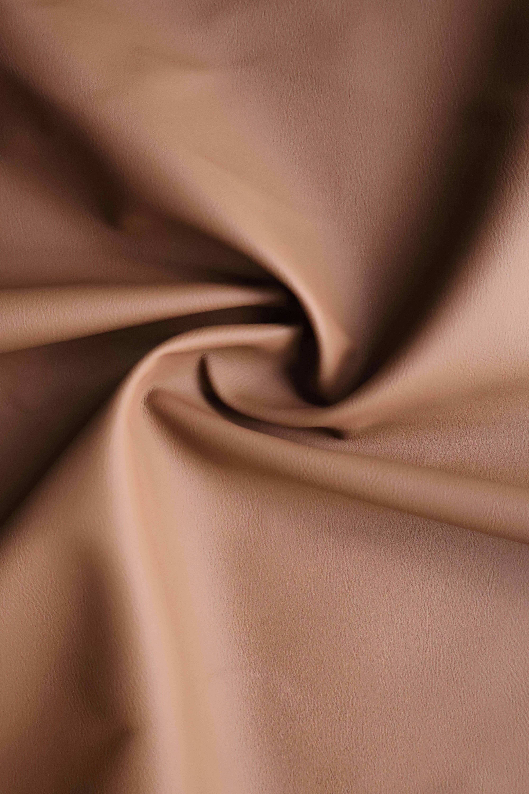
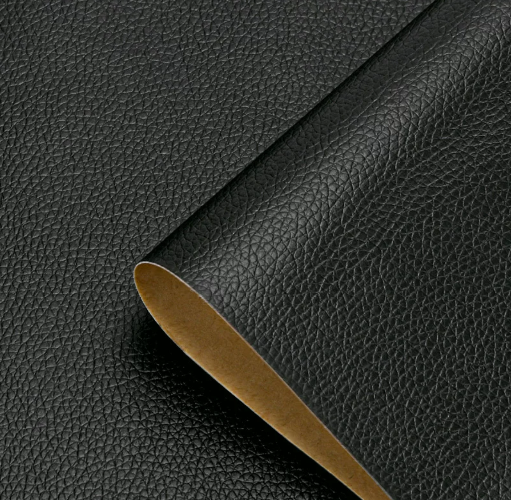
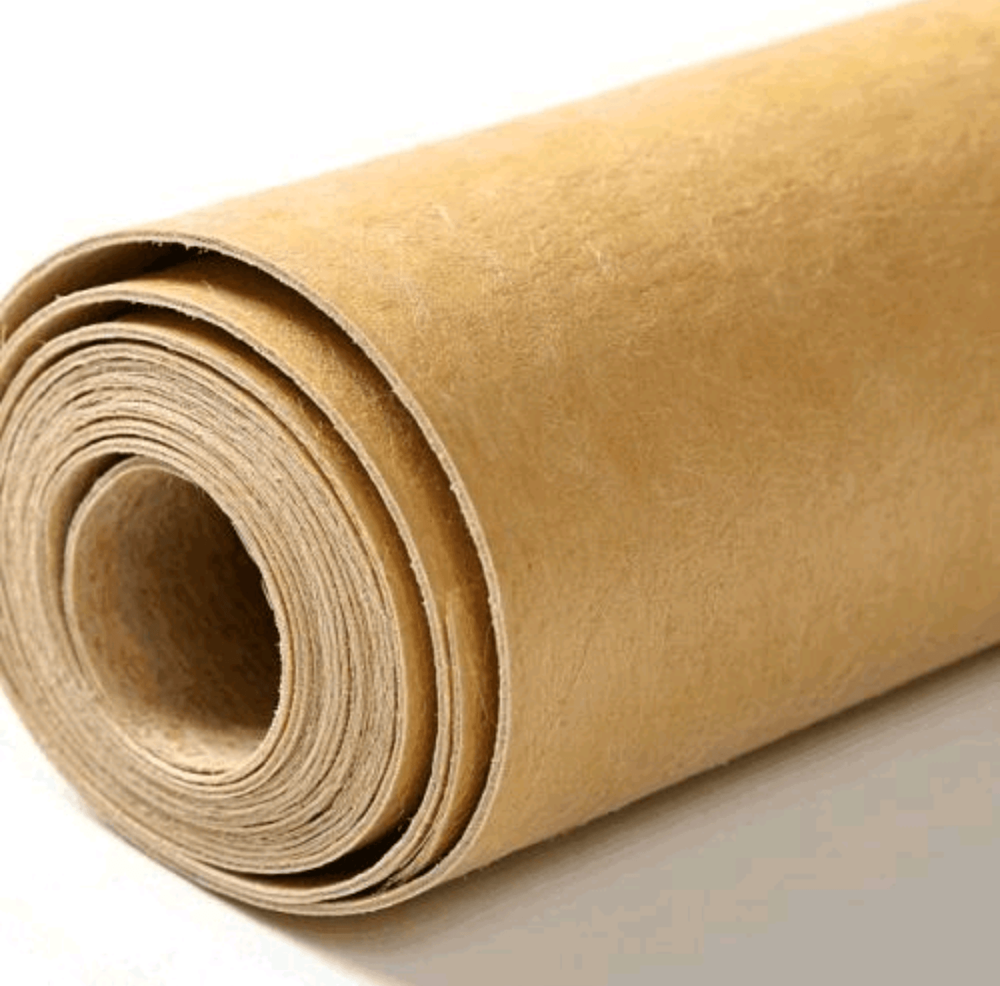
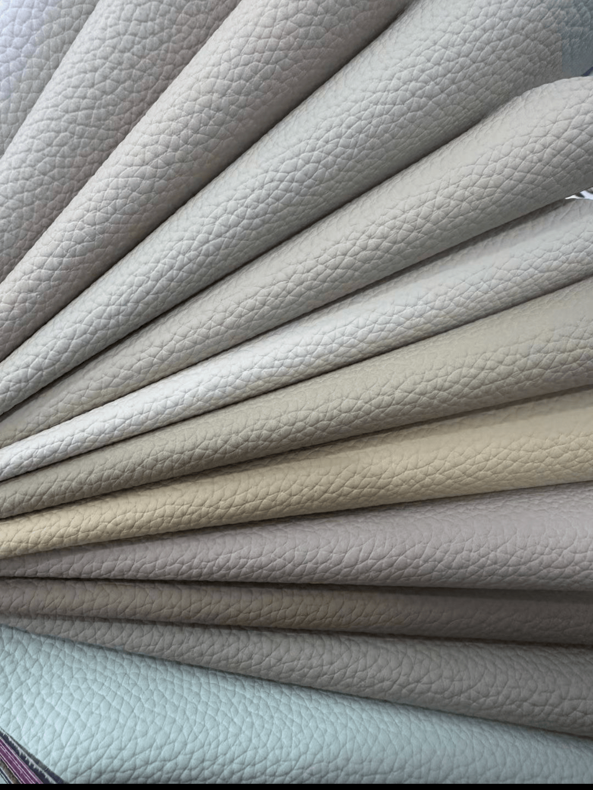
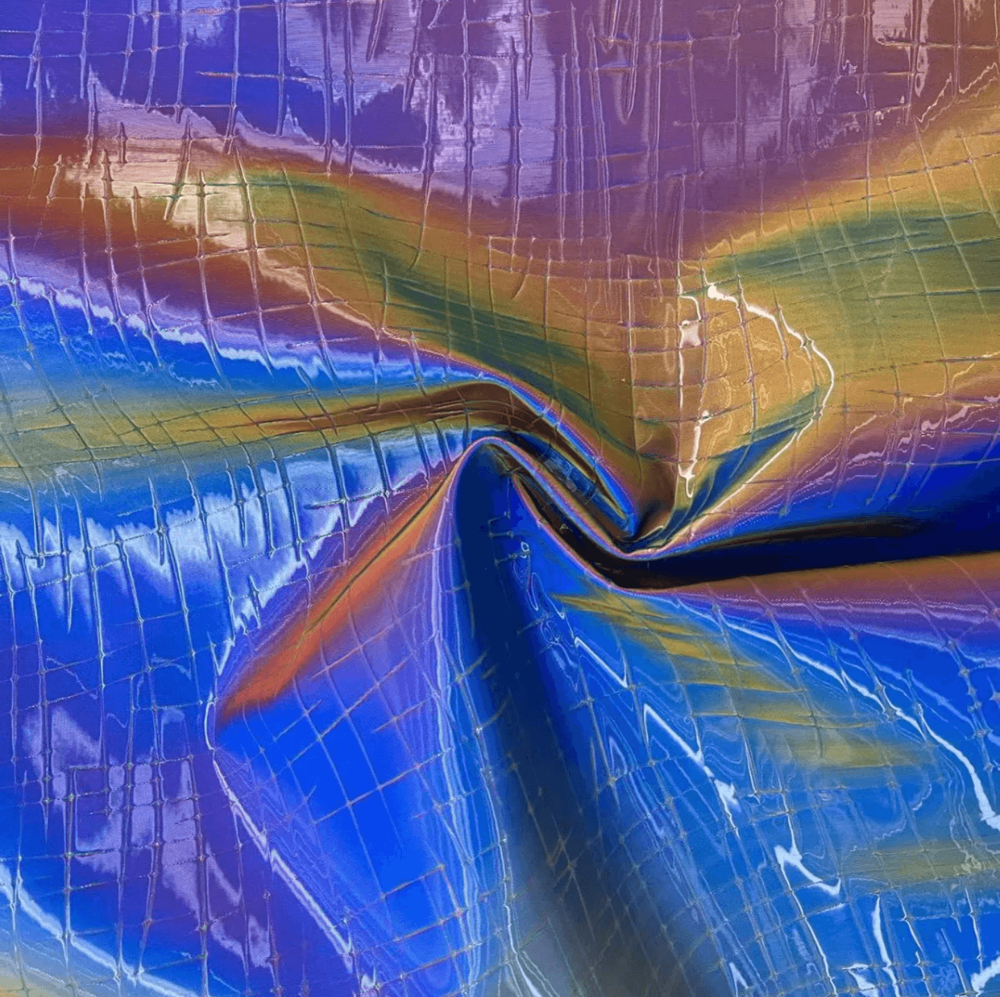
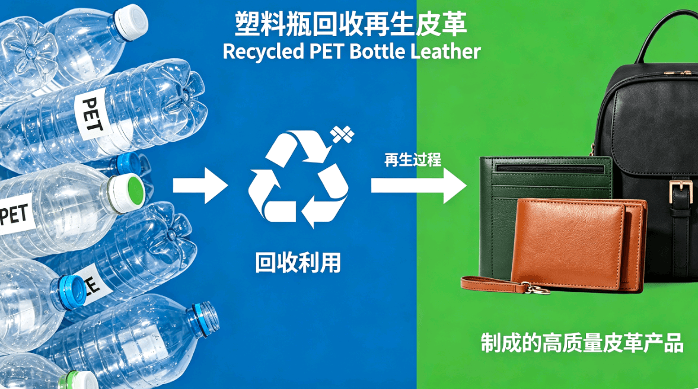

Your Trusted Leather Sourcing Partner In China
中国值得信赖的皮革采购合作伙伴
We solve all your leather sourcing headaches: No high MOQ, no limited styles, no quality issues, no delayed delivery.
我们解决你所有皮革采购难题：没有高起订量、没有款式限制、没有质量问题、没有交货延误。
Free samples available. We’ll send shipping quote after you confirm address.
Why Choose Pengye Over Direct Factories?
为什么选择鹏业，而不是直接找工厂？
| 核心优势 | 英文说明 | 客户获得的实际利益 |
|---|---|---|
| 50码超低起订 | 50 Yards Minimum Order | 不用为了小单被迫囤货，完美适配新品打样和小批量生产 No forced stockpiling for small orders, ideal for new product sampling and small-batch production. |
| 全品类一站式采购 | One-Stop Full Range Supply | 对接更多优质工厂资源，一家配齐所有皮革材料 Access to more high-quality factory resources, one-stop supply for all leather materials. |
| 严格品控把关 | 100% Pre-Shipment Inspection | 我们帮你验货，杜绝次品，不用飞到中国工厂检查 We conduct full pre-shipment quality control to eliminate defects, so you don't need to travel to China for inspections. |
| 更快交货时效 | 7 Days Fast Delivery | 整合多家工厂库存，调货更快，比单一工厂交货早3-5天 Integrated multi-factory inventory for faster lead times, 3-5 days earlier than single-factory sourcing. |
| 更优采购价格 | Competitive Factory Direct Prices | 20年深度合作关系，拿到比你自己找工厂更低的价格 20+ years of deep partnerships secure better pricing than direct factory sourcing. |
Leather Factory Production Process
皮革工厂生产流程 | 从原料到成品，全链路严格品控
From raw material to finished leather, strict quality control at every step.
Proven Track Record in Global Leather Sourcing
全球皮革采购领域的可靠合作伙伴
Veteran-Owned & Operated 退伍军人诚信经营
We run our business with military discipline and integrity. No hidden fees, no quality cutting, no broken promises.
我们以军人的纪律和诚信经营生意。没有隐藏费用，不偷工减料，不违背承诺。
Transparent Production & Quality Control 透明生产，质量可控
We share daily production and quality inspection videos with you. You can see the quality and progress clearly, anytime.
我们每日发送生产与质检视频，让你清晰掌握每一批订单的进度与品质，看得见的可靠。
20 Years Industry Experience 20年行业深耕
Since 2006, we have been specializing in leather sourcing. We know every factory, every material, and every trick of the trade.
自2006年起，我们专注于皮革采购。我们了解每一家工厂、每一种材料和行业的每一个细节。
Long-Term Factory Partnerships 长期工厂合作关系
We have long-term partnerships with top leather factories in China, ensuring stable stock access and competitive prices.
我们与中国多家顶级皮革工厂建立了长期合作关系，确保稳定的库存供应和有竞争力的价格。
Our Full Leather Series / 全系列皮革产品
点击查看详细产品信息与样品展示

Genuine Leather 真皮
天然原生态真皮

Water-Based PU Leather 水性PU
无溶剂环保水性聚氨酯革

Eco-Friendly PU Leather 环保PU
低碳合规环保合成PU革

Standard PU Leather 标准PU
常规聚氨酯基础合成革

PVC Leather PVC革
经济型聚氯乙烯合成革

Bio-Based Leather 生物基皮革
植物萃取可持续生态皮革

Microfiber Leather 超纤皮革
高性能超细纤维仿真皮革

Special Leather 特殊皮革
定制纹路特种工艺皮革

Recycled PET Bottle Leather PET瓶回收再生皮革
塑料瓶再生环保循环皮革